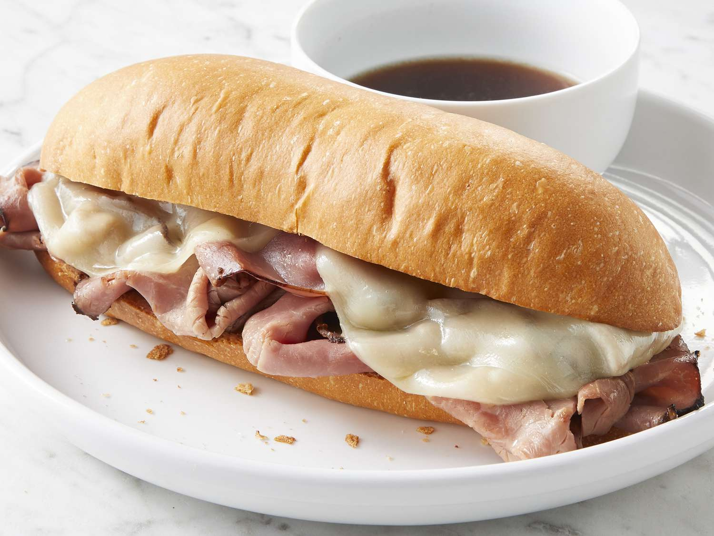

French Dip

Mmmm... Mnnnn... Oui Oui. Foux du fafa.
You won't find this at your local boulangerie.
Ingredients
- 1/4 kg of French Beef
- 2.2 oz of Mimolette
- 0.3333 oz of Herbes de Provence
- 0.5 g of Sel de Provence
- 1/4 kilometer of Fresh Baguette
- 1 packet of Winco© Au Jus Powder
- 1 carton of Gauloises (or Gitanes)
Directions
- In a large bowl, mix Herbes et Sel de Provence.
- Start to prepare Au Jus by following directions on Winco© Packet.
-
Unwrap French Beef and place on nearest stone countertop and cut it
into thin slices. Spread out slices on countertop for the next step.
-
Begin the French Smoking Process:
- Take a cigarette from the carton of Gauloises and light it
- Inhale deeply and exhale on beef.
- Repeat until beef is cooked through
-
Apply slight pressure to the baguette to make sure that you hear a
crackle. This means its fresh.
-
Let the ingredients rest as they are and watch Ratatouille.
-
Cut off a small piece of your baguette (no more than 1/8 km) and
cut through the middle lengthwise. Put in french-smoked beef and
slices of mimolette to your taste.
-
Ladel out Au Jus with hands.
-
Bon Appétit!